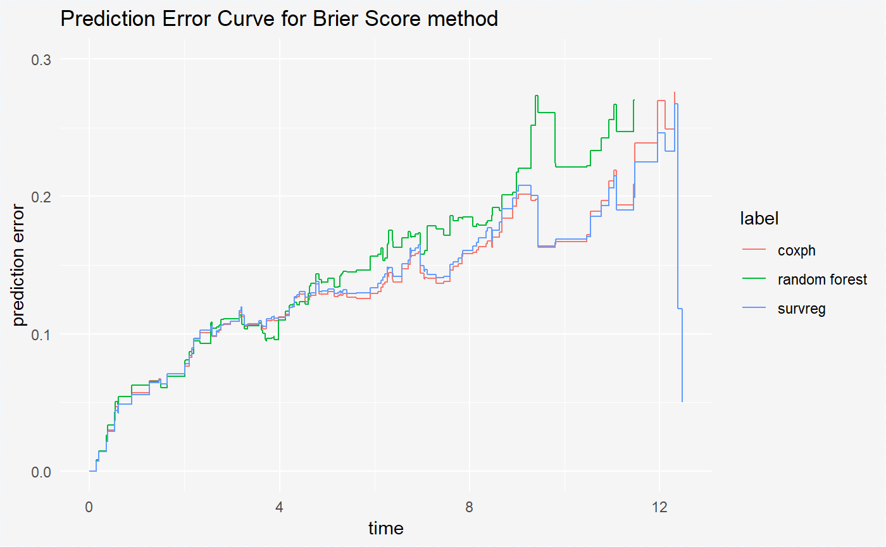
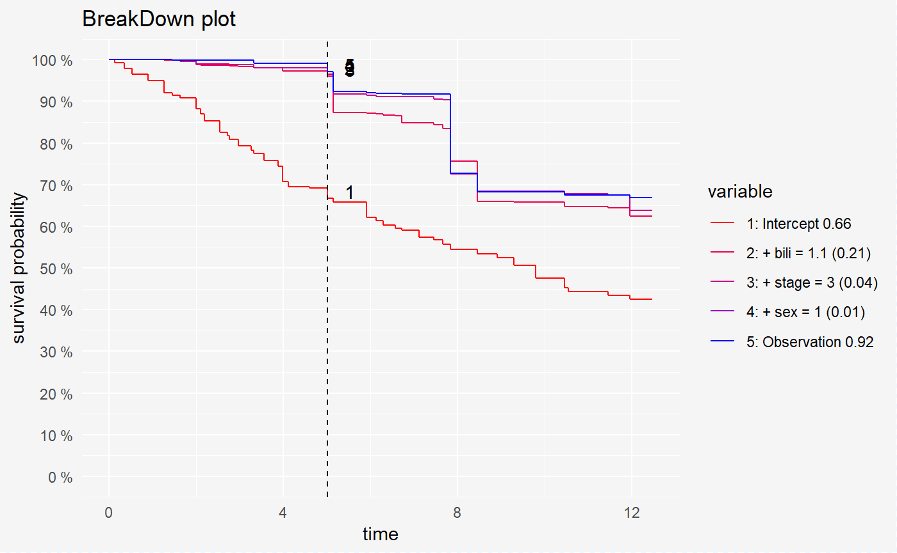

How to compare models with survxai
Alicja Gosiewska, Aleksandra Grudziaz
2018-08-20
How_to_compare_models_with_survxai.RmdIntroduction
Package survxai contains functions for creating a unified representation of a survival models. Such representations can be further processed by various survival explainers. Tools implemented in survxai help to understand how input variables are used in the model and what impact do they have on final model prediction.
The analyses carried out using this package can be divided into two parts: local analyses of new observations and global analyses showing the structures of survival models. In this vignette we present both, global and local explanations.
Methods and functions in survxai package are based on DALEX package.
Use case - data
Data set
We use the data from the Mayo Clinic trial in primary biliary cirrhosis (PBC) of the liver conducted between 1974 and 1984. A total of 424 PBC patients, referred to Mayo Clinic during that ten-year interval, met eligibility criteria for the randomized placebo controlled trial of the drug D-penicillamine. First 312 cases in the data set participated in the randomized trial and contain largely complete data. The pbc data is included in the randomForestSRC package.
We base models on three variables from pbc data set. They are stage, sex, and bili. For this purpouse we create a new data set pbc_smaller. We also change days for years.
data(pbc, package = "randomForestSRC")
pbc <- pbc[complete.cases(pbc),]
pbc_smaller <- pbc[,c("days", "status","sex", "bili", "stage")]
pbc_smaller$years <- pbc$days/365
pbc_smaller <- pbc_smaller[,-1]
head(pbc_smaller)## status sex bili stage years
## 1 1 1 14.5 4 1.095890
## 2 0 1 1.1 3 12.328767
## 3 1 0 1.4 4 2.772603
## 4 1 1 1.8 4 5.273973
## 5 0 1 3.4 3 4.120548
## 7 0 1 1.0 3 5.019178We also convert variables sex and stage to factors.
pbc_smaller$sex <- as.factor(pbc_smaller$sex)
pbc_smaller$stage <- as.factor(pbc_smaller$stage)We divide our data set into train and test sets.
smp_size <- floor(0.5 * nrow(pbc_smaller))
set.seed(123)
train_ind <- sample(seq_len(nrow(pbc_smaller)), size = smp_size)
train <- pbc_smaller[train_ind, ]
test <- pbc_smaller[-train_ind, ]Models
In this section, we create 3 models: Cox Proportional Hazards Model, Random Forests for Survival, and Parametric Survival Regression Model.
Cox Proportional Hazards Model
Cox proportional hazards model is based on five variables: age, treatment, stage, sex, and bili.
library(rms)
cph_model <- cph(Surv(years, status)~., data = train, surv = TRUE, x = TRUE, y=TRUE)Explanation
First, we have to create survival explainers - objects that wrap-up the black-box model with meta-data. Explainers unify model interfacing.
Some models require custom predict function. Examples are in Custom predict function for survival models vignette.
Predict functions for cph and rfsrc objects are implemented.
library(survxai)
surve_cph <- explain(model = cph_model,
data = test[,-c(1,5)],
y = Surv(test$years, test$status))
print(surve_cph)## Model label: coxph
## Model class: cph,rms,coxph
## Data head :
## sex bili stage
## 2 1 1.1 3
## 3 0 1.4 4surve_rf <- explain(model = rf_model,
label = "random forest",
data = test[,-c(1,5)],
y = Surv(test$years, test$status))
print(surve_rf)## Model label: random forest
## Model class: rfsrc,grow,surv
## Data head :
## sex bili stage
## 2 1 1.1 3
## 3 0 1.4 4For model created by survreg() function we have to add specific custom predict function. We add this function to explainer by predict_function parameter.
library(CFC)
custom_predict <- function(model, newdata, times){
times <- sort(times)
vars <- all.vars(model$call[[2]][[2]])
n_vars <- which(colnames(newdata) %in% vars)
if(length(n_vars)>0){
newdata <- newdata[,-c(n_vars)]
}
model$x <- model.matrix(~., newdata)
res <- matrix(ncol = length(times), nrow = nrow(newdata))
for(i in 1:nrow(newdata)) {
res[i,] <- cfc.survreg.survprob(t = times, args = model, n = i)
}
return(res)
}
surve_reg <- explain(model = reg_model,
data = test[,-c(1,5)],
y = Surv(test$years, test$status),
predict_function = custom_predict)
print(surve_reg)## Model label: survreg
## Model class: survreg
## Data head :
## sex bili stage
## 2 1 1.1 3
## 3 0 1.4 4Global explanations
At the beginning, we are dealing with global explanations. We focus on explanations of the global and conditional model structure.
Model performance
Currently, in the survxai package is implemented only the BS type of model performance. In this metod for each time point we compute the prediction error for model. We compute model_performance explainers for all three models created above.
mp_cph <- model_performance(surve_cph)
mp_rf <- model_performance(surve_rf)
mp_reg <- model_performance(surve_reg)For each explainer we can print values using generic print() function.
print(mp_cph)## Model performance for Brier Score method.
## time prediction error
## 1 0.1397260 ~ 0.75%
## 2 0.1945205 ~ 1.43%
## 3 0.3589041 ~ 2.28%
## 4 0.3835616 ~ 2.99%
## 5 0.5232877 ~ 3.96%
## 6 0.5424658 ~ 4.67%
## 7 0.5917808 ~ 4.24%
## 8 0.6109589 ~ 4.86%
## 9 0.8931507 ~ 5.69%
## 10 1.2602740 ~ 6.6%We plot all three models using generic plot() function.
plot(mp_cph, mp_rf, mp_reg) + ylim(c(0,0.30))
On the plot, we see that the Cox Proportional Hazards Model and Parametric Survival Regression Model have simmilar performance - prediction errors for these models are almost the same. For the Survival Random Forest Model we have the smallest prediction errors.
Variable response
Variable response explainers are designed to better understand the relation between a variable and a model output. We compute variable_response explainers for all three models created above.
Factor variable
First, we compute explainers for the factor variable sex.
vr_cph_sex <- variable_response(surve_cph, "sex")
vr_rf_sex <- variable_response(surve_rf, "sex")
vr_reg_sex <- variable_response(surve_reg, "sex")For each explainer we can print values using generic print() function.
print(vr_cph_sex)## x y value type label var
## 1 0.1397260 0.9922858 1 pdp coxph sex
## 2 0.1945205 0.9922858 1 pdp coxph sex
## 3 0.3589041 0.9762765 1 pdp coxph sex
## 4 0.3835616 0.9762765 1 pdp coxph sex
## 5 0.5232877 0.9613915 1 pdp coxph sex
## 6 0.5424658 0.9613915 1 pdp coxph sexWe visualize explainers on one plot.
plot(vr_cph_sex, vr_rf_sex, vr_reg_sex)We see that in all models patients with sex=1 have higher probability of survival.
In survival_variable_response plots we can also compare models in division into all variable levels using parameter split = "variable".
plot(vr_cph_sex, vr_rf_sex, vr_reg_sex, split = "variable")Continuous variable
We can also compute the pdp plots for numeric variables. For this, we divide values of variable bili into 6 intervals.
vr_cph_bili <- variable_response(surve_cph, "bili")
vr_rf_bili <- variable_response(surve_rf, "bili")
vr_reg_bili <- variable_response(surve_reg, "bili")plot(vr_cph_bili, vr_rf_bili, vr_reg_bili)As mentioned above we can split our comparison by each variable level.
plot(vr_cph_bili, vr_rf_bili, vr_reg_bili, split = "variable")Local explanations
The next aspects of survival model analysis are local explanations - the explanations for one, new observation.
single_observation <- test[1,-c(1,5)]
single_observation## sex bili stage
## 2 1 1.1 3Ceteris paribus
Ceteris Paribus Plots for survival models are survival curves around one observation. Each curve represent observation with different value of chosen variable. For factor variables curves covers all possible values, for numeric variables values are divided into quantiles.
cp_cph <- ceteris_paribus(surve_cph, single_observation)
cp_rf <- ceteris_paribus(surve_rf, single_observation)
cp_reg <- ceteris_paribus(surve_reg, single_observation)For each ceteris paribus explainer we can print values using generic print() function.
print(cp_cph)## y_hat new_x vname x_quant quant relative_quant label time
## 1 0.9978522 0 sex 0 0 0 coxph 0.1397260
## 2 0.9978522 0 sex 0 0 0 coxph 0.1945205
## 3 0.9927118 0 sex 0 0 0 coxph 0.3589041
## 4 0.9927118 0 sex 0 0 0 coxph 0.3835616
## 5 0.9870411 0 sex 0 0 0 coxph 0.5232877
## 6 0.9870411 0 sex 0 0 0 coxph 0.5424658
## class
## 1 factor
## 2 factor
## 3 factor
## 4 factor
## 5 factor
## 6 factorplot(cp_cph, scale_type = "gradient", scale_col = c("red", "blue"))plot(cp_rf, scale_type = "gradient", scale_col = c("red", "blue"))plot(cp_reg, scale_type = "gradient", scale_col = c("red", "blue"))On the plots above we see that for variables bili and sex coxph and survreg model have simmilar performance, but randomForest model has different predictions of survival probability.
Prediction breakdown
Break Down Plots for survival models compare, by default, differences in predictions for median of time. We can change the time of computing the contributions for each variable using time parameter.
broken_prediction_cph <- prediction_breakdown(surve_cph, single_observation)
broken_prediction_rf <- prediction_breakdown(surve_rf, single_observation)
broken_prediction_reg <- prediction_breakdown(surve_reg, single_observation)For each prediction breakdown explainer we can print values using generic print() function.
print(broken_prediction_cph)## contribution
## bili 10.103%
## stage 7.714%
## sex 1.069%plot(broken_prediction_cph, scale_col = c("red", "blue"), lines_type = 2)plot(broken_prediction_rf, scale_col = c("red", "blue"), lines_type = 2)
plot(broken_prediction_reg, scale_col = c("red", "blue"), lines_type = 2)This plots helps to understand the factors that drive survival probability for a single observation.
For all models variable bili is the variable with the largest contribution. But the second variable is different randomForest (age) and coxph, survreg (stage).
We can also compute the variables contribution for chosen survival probability value.
broken_prediction_cph <- prediction_breakdown(surve_cph, single_observation, prob = 0.8)
broken_prediction_rf <- prediction_breakdown(surve_rf, single_observation, prob = 0.8)
broken_prediction_reg <- prediction_breakdown(surve_reg, single_observation, prob = 0.8)plot(broken_prediction_cph, scale_col = c("red", "blue"), lines_type = 2)plot(broken_prediction_rf, scale_col = c("red", "blue"), lines_type = 2)plot(broken_prediction_reg, scale_col = c("red", "blue"), lines_type = 2)We can compare this models on one plot.
plot(broken_prediction_cph, broken_prediction_rf, broken_prediction_reg, scale_col = c("red", "blue"), lines_type = 2)For the transparency of the charts we recommend drawning them separately.